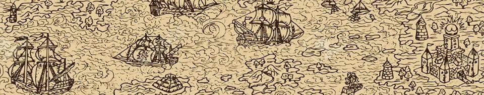
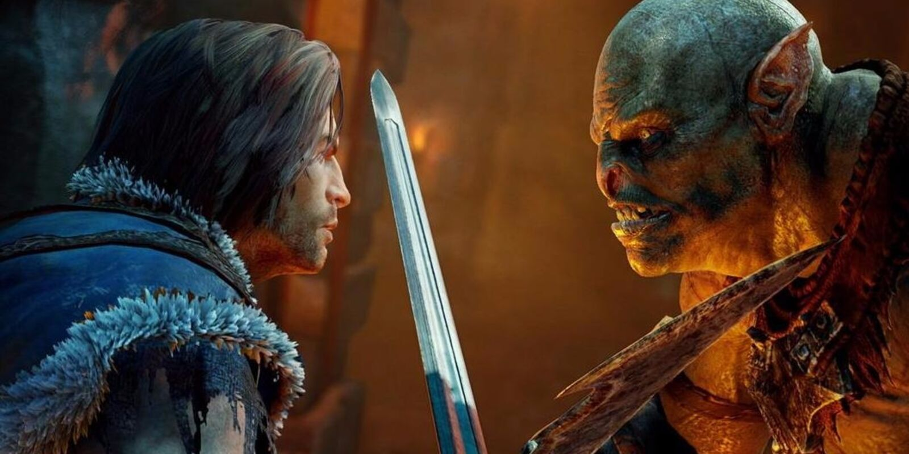
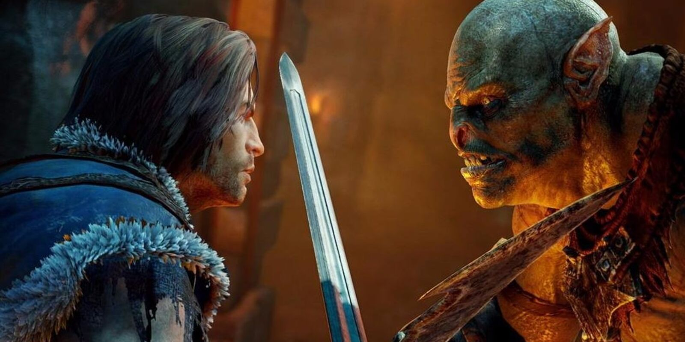

Paises del mundo

Mordor
|  | País ficticio perteneciente al legendarium creado por el escritor británico J. R. R. Tolkien, donde se desarrollan importantes acontecimientos de sus novelas El Señor de los Anillos |  |
|  | País ficticio perteneciente al legendarium creado por el escritor británico J. R. R. Tolkien, donde se desarrollan importantes acontecimientos de sus novelas El Señor de los Anillos | |